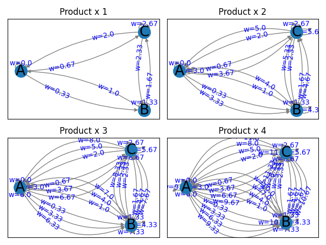

Note
Go to the end to download the full example code
Plotting MultiDiGraph Edges and Labels#
This example shows how to plot edges and labels for a MultiDiGraph class object. The same applies for DiGraph and MultiGraph class objects.
4 Graphs are created, each with different number of edges between 2 nodes. The final graph contains 4 edges in every node pair and 2 self loops per node.
MultiGraph can have unlimited multi-edges that can be drawn with different angles and theoretically node labels can remain visible.
Multi-self-loops can be drawn in 4 directions of the node. The subsequent loops will result in overlaps.
import itertools as it
import numpy as np
import networkx as nx
import matplotlib.pyplot as plt
def draw_labeled_multigraph(G, attr_name, ax=None):
"""
Length of connectionstyle must be at least that of a maximum number of edges
between pair of nodes. This number is maximum one-sided connections
for directed graph and maximum total connections for undirected graph.
"""
# Works with arc3 and angle3 connectionstyles
connectionstyle = [f"arc3,rad={r}" for r in it.accumulate([0.15] * 4)]
# connectionstyle = [f"angle3,angleA={r}" for r in it.accumulate([30] * 4)]
pos = nx.shell_layout(G)
nx.draw_networkx_nodes(G, pos, ax=ax)
nx.draw_networkx_labels(G, pos, font_size=20, ax=ax)
nx.draw_networkx_edges(
G, pos, edge_color="grey", connectionstyle=connectionstyle, ax=ax
)
labels = {
tuple(edge): f"{attr_name}={attrs[attr_name]}"
for *edge, attrs in G.edges(keys=True, data=True)
}
nx.draw_networkx_edge_labels(
G,
pos,
labels,
connectionstyle=connectionstyle,
label_pos=0.3,
font_color="blue",
bbox={"alpha": 0},
ax=ax,
)
nodes = "ABC"
prod = list(it.product(nodes, repeat=2))
pair_dict = {f"Product x {i}": prod * i for i in range(1, 5)}
fig, axes = plt.subplots(2, 2)
for (name, pairs), ax in zip(pair_dict.items(), np.ravel(axes)):
G = nx.MultiDiGraph()
for i, (u, v) in enumerate(pairs):
G.add_edge(u, v, w=round(i / 3, 2))
draw_labeled_multigraph(G, "w", ax)
ax.set_title(name)
fig.tight_layout()
plt.show()
Total running time of the script: (0 minutes 0.913 seconds)